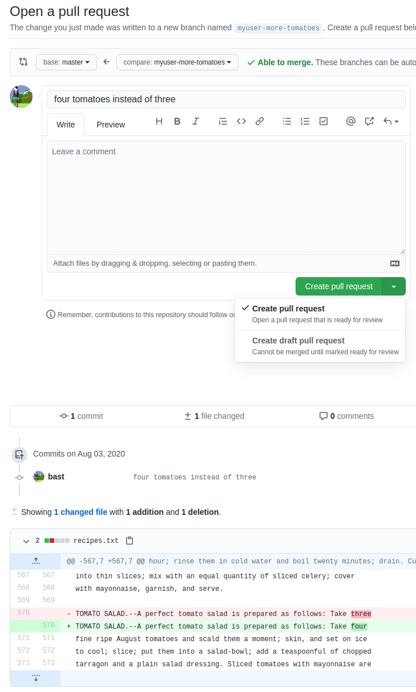

Contributing and code reviews¶
Questions
- How to collaborate in a project
- How to contribute to someone else's project?
Info
- We will give an overview of
- Centralized collaboration
- Forked collaboration
- How to contribute
Learning outcomes
- practice doing Pull Requests using the GitHub interface
- practice doing a code review
- explain and evaluate the usefulness of git Pull Request with code review
For teachers
Teaching goals are:
- Learners have practiced doing Pull Requests using the GitHub interface
- Learners have practiced doing a code review
gantt
title Lesson plan apply merge
dateFormat X
axisFormat %s
Introduction: intro, 0, 5s
Theory 1: theory_1, after intro, 5s
Exercise 1: crit, exercise_1, after theory_1, 40s
Feedback 1: feedback_1, after exercise_1, 10sChanges
- more practical examples of git forking and branching and when it is appropriate to use them.
- exercises
- clearer instructions
Branches, merging, code reviews¶
Note
- The earlier '(Make a) Pull Request' has changed name into 'Contribute`
- Still
Pull requestsis the name in the menu!
One can suggest to merge branches on GitHub, where it is called a Pull Request. For a Pull Request, a team member can be asked for a code review. Code reviews are useful for many reasons, among others the spread of knowledge.
One can merge branches locally, using the command-line or VS code. This will bypass code review and that is OK. For example, merging develop to your topic branch does not need a code review.
GitHub and new repos¶
Let's go back to GitHub and collaboration for now!
There are two more ways to create “copies” of repositories into your user space:
- A repository can be marked as template and new repositories can be generated from it, like using a cookie-cutter.
- The newly created repository will start with a new history, only one commit, and not inherit the history of the template.
- You can import a repository from another hosting service or web address.
- This will preserve the history of the imported project.
Different workflows for collaboration¶
Centralized workflow¶

Centralized layout
- Red is the repository on GitHub.
-
Blue is where all contributors work on their own computers.
-
Centralized workflow is often used for remote collaborative work.
originrefers to where you cloned from (but you can relocate it).origin/mybranchis a read-only pointer to branchmybranchonorigin.- These read-only pointers only move when you
git fetch/git pullorgit push.
Distributed version control and Forking workflow¶
This is used when you are not a collaborator

Forking workflow
- Red is the central repository, where only owners have access.
- Green are forks on GitHub (copy for a single user to work on).
- Blue are local copies where contributors work on their own computer.
Contributing in a team¶
Contributing to existing repositories using pull requests¶
Step 1. Add collaborators to your repository
License: Creative Commons Attribution 4.0 International
- Permits almost any use subject to providing credit and license notice.
- Frequently used for media assets and educational materials.
- The most common license for Open Access scientific publications.
- Not recommended for software.
Info
- This was done the first day!
-
Add your group members or collaborators as "collaborators" under GitHub. This allows them to change things directly (but we'll actually do it with review).
-
From here on the collaborators can push changes in the same way as we have done in a single-person repository in the previous episodes.
Step 2: Submit a small change via the web interface as collaborator
-
We learned how to directly commit changes either via web or via the desktop and you need to be a collaborator (have write permissions) to be able to do that.
-
The tool here is pull request.
Note
When merging a branch on GitHub you come to the same place!
Example with a salad repo
- In this example the contributor will not change the
mainbranch directly but submit a "pull request" (a change proposal) towards themainbranch for code review. - You do this by just changing the file at GitHub
- Before committing/proposing file change you may preview the changes.

- After we click "Commit / change proposal" we are taken to this form:

- In there we
- verify the source and target branch,
- verify the file changes,
- can edit the title and description of the "pull request" (change proposal)
- After we have submitted the "pull request", one of our collaborators can review it
- We can discuss and ask for changes before merging the changes "Merge pull request"
Discussion
- Ideally submitter and reviewer should be two different persons.
- When is this best? When not?
- You can modify an open "pull request" by committing new changes to the branch
- Review is not only to assure quality but also to enhance learning and knowledge transfer within the group
Branch protection¶
-
To make sure that all changes of the
mainbranch are reviewed and nobody can push commits to it directly, it can be useful to "protect" branches. -
"Settings", then "Branches", then "Add rule":

Tip
- Protecting the
mainbranch "forces" all changes to it to be reviewed first. - We recommend this for group repositories.
- Discuss the advantages/disadvantages of this.
Resolving a conflict¶
This will work the same as with merging
Discussion
Compare with Google Docs: can you get conflicts there? What are the advantages and disadvantages? What can we do to avoid conflicts?
How to contribute changes to somebody else’s project¶
-
Avoid frustration and surprises by first discussing and then coding.
-
We apply the Forking workflow
Forking workflow
- Red is the central repository, where only owners have access.
- Green are forks on GitHub (copy for a single user to work on).
- Blue are local copies where contributors work on their own computer.
In the forking layout described above we work with multiple remotes, in this case two remotes: One remote refers to the "central" repository, and the other remote refers to the "fork".
- Working with multiple remotes is not as scary as it might look.
originis just an alias/placeholder.- We can add and remove remotes.
- We can call these aliases/placeholders as we like.
- We typically synchronize/updates remotes via the local clone.
- To see all remotes use
git remote -v. - If you are more than one person contributing to a project, consider using code review.
See also
Contributing very minor changes¶
- Fork repository
- Create a branch (e.g. with your name)
- Commit and push change
- File a pull request or merge request
If you observe an issue and have an idea how to fix it¶
- Open an issue in the repository you wish to contribute to
- Describe the problem
- If you have a suggestion on how to fix it, describe your suggestion
- Possibly discuss and get feedback
- If you are working on the fix, indicate it in the issue so that others know that somebody is working on it and who is working on it
- Submit your fix as pull request or merge request which references/closes the issue
Example with Pull request¶
- Submitting a change proposal as external contributor looks very similar to submitting a "pull request" to a repository with a protected
mainbranch.- (we assume you are not added as "collaborator" and thus have no write-permissions to a repository)
- Only this time you have no other choice than "Propose file change".
Cheat-sheet
Commits, branches, repositories, forks, clones
- repository: The project, contains all data and history (commits, branches, tags).
- commit: Snapshot of the project, gets a unique identifier (e.g.
c7f0e8bfc718be04525847fc7ac237f470add76e). - branch: Independent development line, often we call the main development line
mainormain. - tag: A pointer to one commit, to be able to refer to it later. Like a commemorative plaque that you attach to a particular commit (e.g.
phd-printedorpaper-submitted). - cloning: Copying the whole repository to your laptop - the first time.
- It is not necessary to download each file one by one.
- good within a group
- forking: Taking a copy of a repository (which is typically not yours)
- our copy (fork) stays on GitHub and you can make changes to your copy.
- better for contribution to other's project
git clonecopies everything: all commits and all branches.- Branches on the remote appear as (read-only) local branches with a prefix, e.g.
origin/main. - We synchronize commits between local and remote with
git fetch/git pullandgit push. - Repositories that are shared online often synchronize via pull requests or merge requests.
- Repositories that are forked or cloned do not automatically synchronize themselves.
Exercises¶
Extra exercise 1: Practice code review¶
For team member A:
- Create a topic branch (from
develop) - Do something trivial on that topic branch
- Submit a GitHub Pull Request to merge it to
develop - Assign the other team member as the reviewer
- Do a pretend code review until the Pull Request is accepted
- The reviewer merges the code to
develop
Now do the same for team member B.
Enjoy a video?
See the 'Programming Formalisms, 'Apply merge' exercise 3' YouTube video
Parts to be covered!
- ☑ Source/version control
- Git
- We have a starting point!
- GitHub as remote backup
- branches
- ☑ Planning
- ☑ Analysis
- ☐ Design
- ☑ Testing
- Different levels
- ☑ Collaboration
- ☑ GitHub
- ☑ pull requests
- ☐ Sharing
- ☐ open science
- ☐ citation
- ☐ licensing
- ☐ Documentation
- ☑ in-code documentation
- ☐ documentation for users
Reference Git¶
- Pro Git
- Tsitoara, Mariot, and Mariot Tsitoara. "Git best practices." Beginning Git and GitHub: A Comprehensive Guide to Version Control, Project Management, and Teamwork for the New Developer (2020): 79-86.